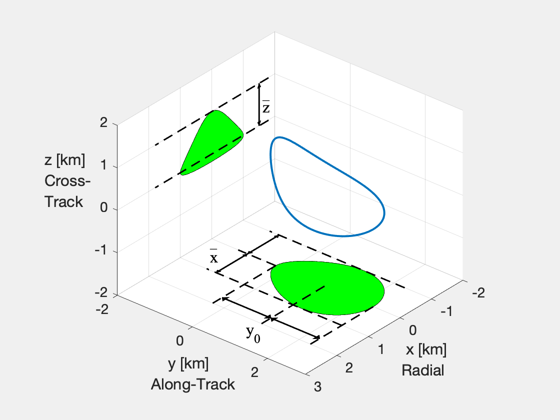
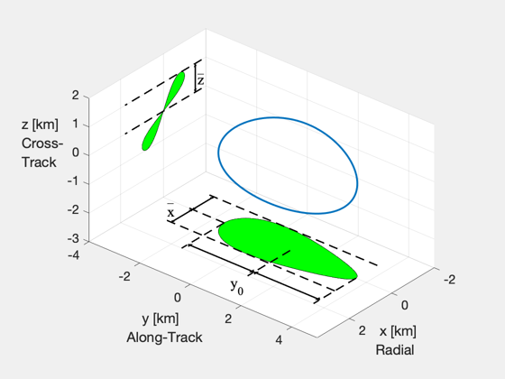

Visualization of eccentric relative orbits
Illustrate the geometric parameters that define a naturally repeating relative trajectory in an eccentric reference orbit.
Since version 7. ------------------------------------------------------------------------------
Contents
%------------------------------------------------------------------------------- % Copyright (c) 2004 Princeton Satellite Systems, Inc. All rights reserved. %-------------------------------------------------------------------------------
Parameters
% linewidth for graphics %----------------------- lw = 1.5; % eccentric geometry %------------------- e = 0.7; N = 300;
Trajectory
g = struct('y0',1, 'xMax',1, 'nu_xMax',pi/2, 'zMax',1, 'nu_zMax',pi); D = FFEccGoals( e, g ); nu = linspace(0,2*pi,N); xH = FFEccProp( D, nu, e ); figure('position',[0 338 560 420]) plot3( xH(1,:), xH(2,:), xH(3,:), 'linewidth',2 ), hold on, axis equal, grid on zb = floor(min(xH(3,:))-1)*ones(1,N); yb = floor(min(xH(2,:))-1)*ones(1,N); patch( xH(1,:), xH(2,:), zb, 'g' ) patch( xH(1,:), yb, xH(3,:), 'g' ) set(gca,'fontsize',14) xlabel(' x [km]\newlineRadial', 'units','normalized','position',[.89, .10, 0]) ylabel(' y [km]\newlineAlong-Track','units','normalized','position',[.22, .06, 0]) zlabel('z [km]\newlineCross-\newlineTrack','rotation',0,'horizontalalignment','right') axis equal, axis([-2 3 yb(1) 3 zb(1) 2]) view([130,30]), cameratoolbar('setmode','orbit') % z lines ymin = min(xH(2,:)); ymax = max(xH(2,:)); plot3([-1.8,1.8],[yb(1),yb(1)],[0,0],'k--','linewidth',lw) plot3([-1.8,1.8],[yb(1),yb(1)],[1,1],'k--','linewidth',lw) % y lines plot3([0,2],[ymin,ymin],zb(1:2),'k--','linewidth',lw) plot3([0,2],[g.y0,g.y0],zb(1:2),'k--','linewidth',lw) plot3([0,2],[ymax,ymax],zb(1:2),'k--','linewidth',lw) % x lines plot3(-[g.xMax,g.xMax],[ymax,ymin-1],zb(1:2),'k--','linewidth',lw) plot3([g.xMax,g.xMax],[ymax,ymin-1],zb(1:2),'k--','linewidth',lw) plot3([0,0],[ymin,ymin-1],zb(1:2),'k--','linewidth',lw) % z arrow and label zt=text(-1.6,yb(1),.4,'z'); bt=text(-1.6,yb(1),.7,'_'); set(bt,'interpreter','none','fontsize',14); set(zt,'fontname','times','fontsize',16) line([-1.5,-1.5],[yb(1),yb(1)],[0,g.zMax],'color','k','linewidth',1.5) patch([-1.45 -1.55 -1.5],yb(1:3),[.9 .9 1],'k'); patch([-1.45 -1.55 -1.5],yb(1:3),[.1 .1 0],'k'); % y arrows and label yt=text(2.5,g.y0,zb(1),'y_0'); set(yt,'fontname','times','fontsize',16) line([1.7 1.7],[ymin,ymax],[zb(1),zb(1)],'color','k','linewidth',1.5) patch([1.8, 1.6, 1.7],[.1, .1, 0]+ymin,zb(1)+[0 0 0],'k') patch([1.8, 1.6, 1.7],[.1, .1, 0]+g.y0,zb(1)+[0 0 0],'k') patch([1.8, 1.6, 1.7],[-.1, -.1, 0]+g.y0,zb(1)+[0 0 0],'k') patch([1.8, 1.6, 1.7],[-.1, -.1, 0]+ymax,zb(1)+[0 0 0],'k') % x arrow and label xt=text(g.xMax*.6,ymin-1.25,zb(1),'x'); bt=text(g.xMax*.6,ymin-1.25,zb(1)+.35,'_'); set(bt,'interpreter','none','fontsize',14); set(xt,'fontname','times','fontsize',16) line([0,g.xMax],[ymin,ymin]-.75,zb(1:2),'color','k','linewidth',1.5) patch([.1 .1 0],ymin-.75+[-.05 .05 0],zb(1:3),'k'); patch(g.xMax-[.1 .1 0],ymin-.75+[-.05 .05 0],zb(1:3),'k'); line([0,-g.xMax],[ymin,ymin]-.75,zb(1:2),'color','k','linewidth',1.5) patch(-[.1 .1 0],ymin-.75+[-.05 .05 0],zb(1:3),'k'); patch(-g.xMax+[.1 .1 0],ymin-.75+[-.05 .05 0],zb(1:3),'k');
Second example
e = 0.6; g = struct('y0',1, 'xMax',1, 'nu_xMax',-pi/2, 'zMax',1, 'nu_zMax',E2Nu(e,pi/2) ); D = FFEccGoals( e, g ); nu = linspace(0,2*pi,N); xH = FFEccProp( D, nu, e ); figure('position',[560 338 560 420]) plot3( xH(1,:), xH(2,:), xH(3,:), 'linewidth',2 ), hold on, axis equal, grid on zb = floor(min(xH(3,:))-1)*ones(1,N)-1; yb = floor(min(xH(2,:))-1)*ones(1,N)-1; patch( xH(1,:), xH(2,:), zb, 'g' ) patch( xH(1,1:N/2), yb(1:N/2), xH(3,1:N/2), 'g' ) patch( xH(1,N/2+1:end), yb(N/2+1:end), xH(3,N/2+1:end), 'g' ) set(gca,'fontsize',14) xlabel(' x [km]\newlineRadial', 'units','normalized','position',[.89, .05, 0]) ylabel(' y [km]\newlineAlong-Track','units','normalized','position',[.22, .09, 0]) zlabel('z [km]\newlineCross-\newlineTrack','rotation',0,'horizontalalignment','right') axis equal, axis([-2 3.5 yb(1) 5 zb(1) 2]) view([130,30]), cameratoolbar('setmode','orbit') % z lines plot3([-1.8,1.8],[yb(1),yb(1)],[0,0],'k--','linewidth',lw) plot3([-1.8,1.8],[yb(1),yb(1)],[1,1],'k--','linewidth',lw) % y lines ymin = min(xH(2,:)); ymax = max(xH(2,:)); plot3([0,2],[ymin,ymin],zb(1:2),'k--','linewidth',lw) plot3([0,2],[g.y0,g.y0],zb(1:2),'k--','linewidth',lw) plot3([0,2],[ymax,ymax],zb(1:2),'k--','linewidth',lw) % x lines plot3(-[g.xMax,g.xMax],[ymax,ymin-1.5],zb(1:2),'k--','linewidth',lw) plot3( [g.xMax,g.xMax],[ymax,ymin-1.5],zb(1:2),'k--','linewidth',lw) plot3( [ 0, 0],[ymin,ymin-1.5],zb(1:2),'k--','linewidth',lw) % z arrow and label zt=text(-1.6,yb(1),.4,'z'); bt=text(-1.6,yb(1),.8,'_'); set(bt,'interpreter','none','fontsize',14); set(zt,'fontname','times','fontsize',16) line([-1.5,-1.5],[yb(1),yb(1)],[0,g.zMax],'color','k','linewidth',1.5) patch([-1.45 -1.55 -1.5],yb(1:3),[.9 .9 1],'k'); patch([-1.45 -1.55 -1.5],yb(1:3),[.1 .1 0],'k'); % y arrows and label yt=text(2.8,g.y0,zb(1),'y_0'); set(yt,'fontname','times','fontsize',16) line([1.7 1.7],[ymin,ymax],[zb(1),zb(1)],'color','k','linewidth',1.5) patch([1.8, 1.6, 1.7],[.1, .1, 0]+ymin,zb(1)+[0 0 0],'k') patch([1.8, 1.6, 1.7],[.1, .1, 0]+g.y0,zb(1)+[0 0 0],'k') patch([1.8, 1.6, 1.7],[-.1, -.1, 0]+g.y0,zb(1)+[0 0 0],'k') patch([1.8, 1.6, 1.7],[-.1, -.1, 0]+ymax,zb(1)+[0 0 0],'k') % x arrow and label xt=text(g.xMax*.6,ymin-1.75,zb(1),'x'); bt=text(g.xMax*.6,ymin-1.75,zb(1)+.5,'_'); set(bt,'interpreter','none','fontsize',14); set(xt,'fontname','times','fontsize',16) line([0,g.xMax],[ymin,ymin]-1.25,zb(1:2),'color','k','linewidth',1.5) patch([.1 .1 0],ymin-1.25+[-.05 .05 0],zb(1:3),'k'); patch(g.xMax-[.1 .1 0],ymin-1.25+[-.05 .05 0],zb(1:3),'k'); line([0,-g.xMax],[ymin,ymin]-1.25,zb(1:2),'color','k','linewidth',1.5) patch(-[.1 .1 0],ymin-1.25+[-.05 .05 0],zb(1:3),'k'); patch(-g.xMax+[.1 .1 0],ymin-1.25+[-.05 .05 0],zb(1:3),'k'); % ------------------------------------ % PSS internal file version information % ------------------------------------